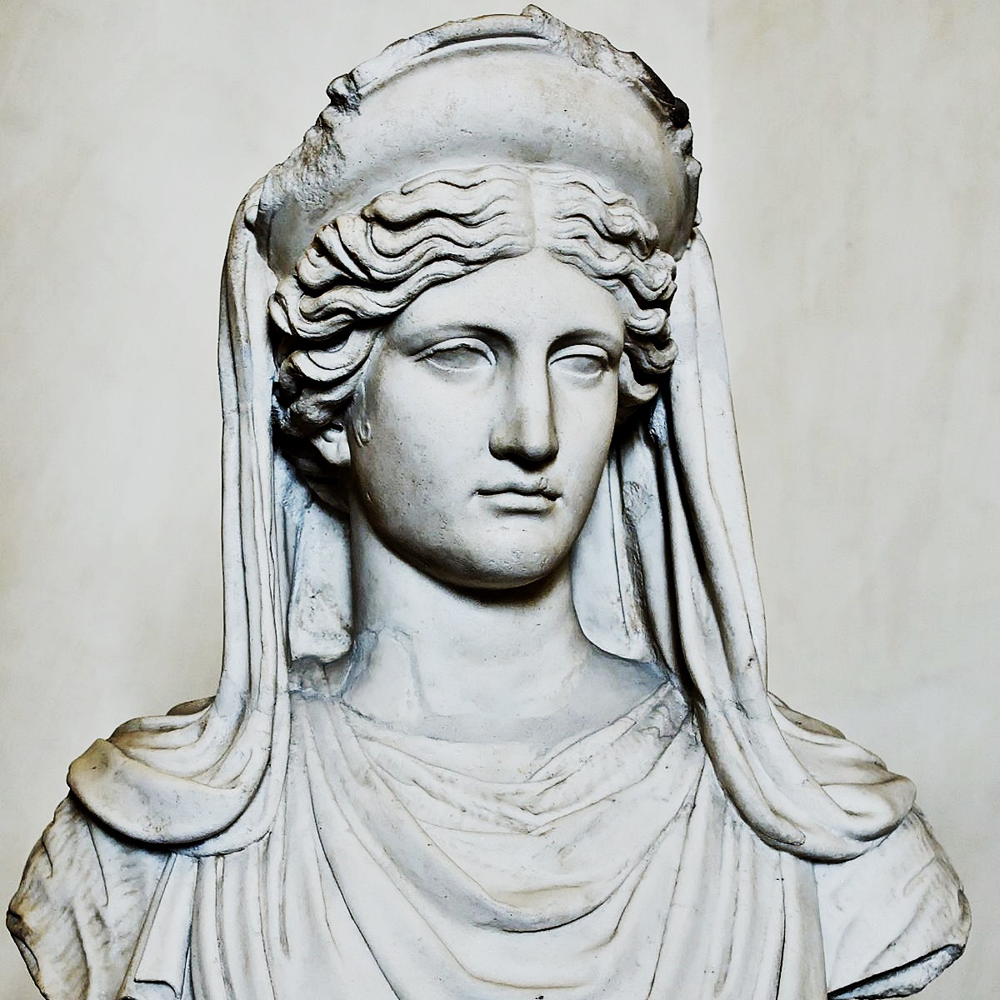

She served as the patron goddess of farmers, and was believed to have taught men how to reap and cultivate the harvest. By Zeus, she is the mother of Persephone, the wife of Hades and queen of the underworld. Both she and Persephone were central figures of the Eleusinian Mysteries, a series of festivals held in honor of the two goddesses in the region of Attica. Her symbols were the scythe, cornucopia, wheat, bread and harvest grains, and the pig and snake were her sacred animals. Her Roman equivalent is Ceres. In Greek Mythology, Demeter's daughter Persephone was kidnapped by Hades, and made her bride. Demeter grieved the loss of her daughter, bringing on a long famine.